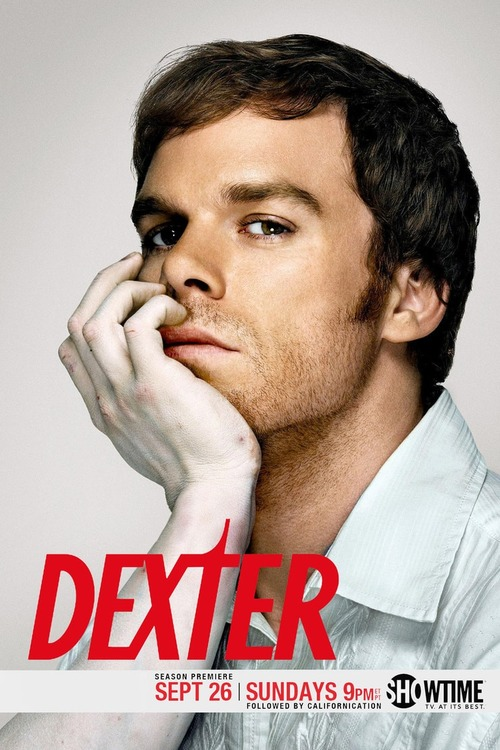
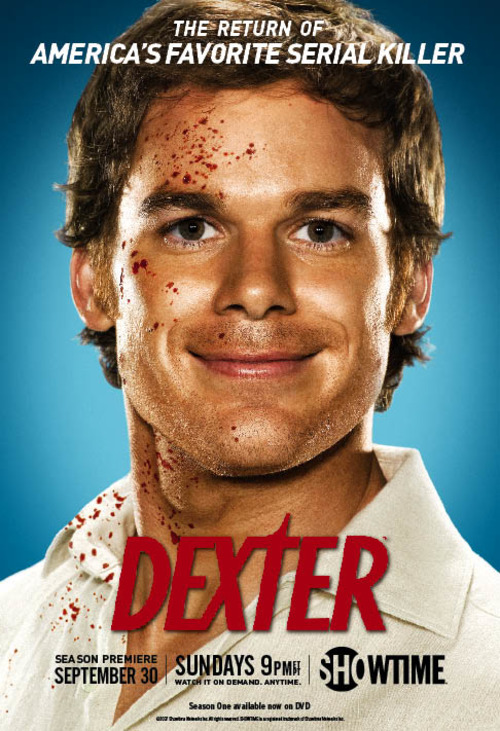
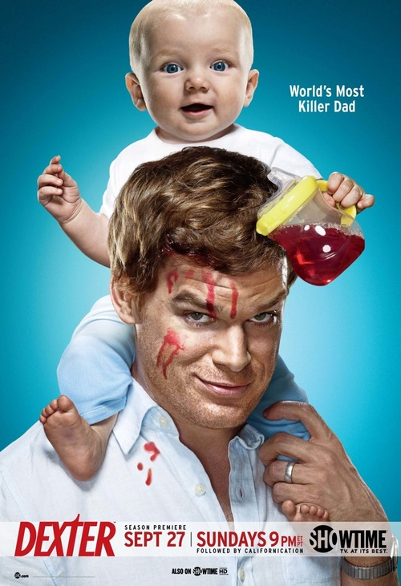
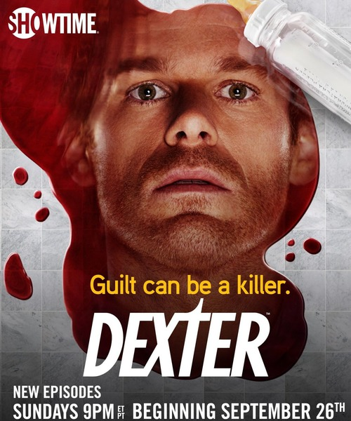
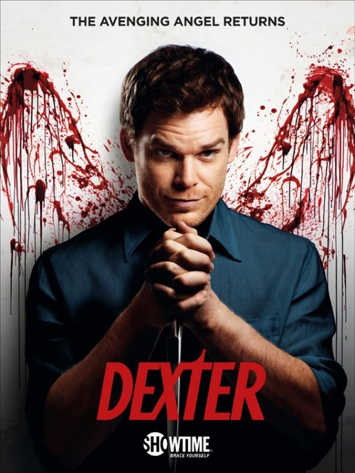
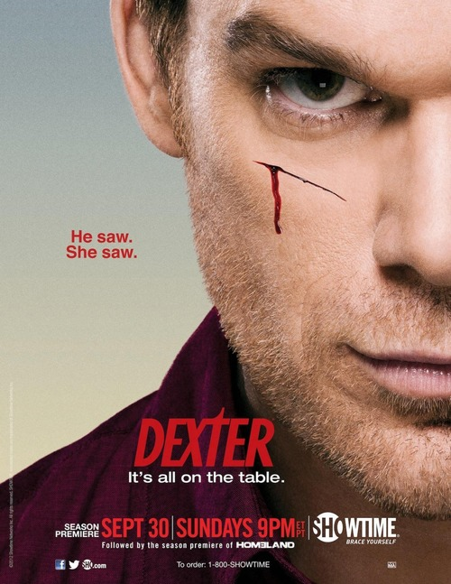
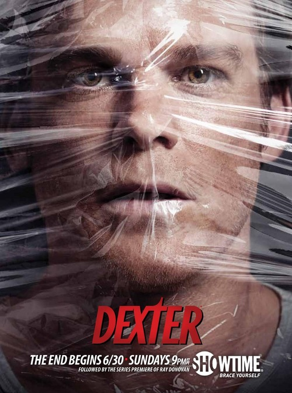

Декстер
Декстер (англ. Dexter) — американський телевізійний серіал, драмедійний кримінально-психологічний трилер з елементами містики, прем'єра якого відбулася 1 жовтня 2006 року. У лютому 2008 року в ефірі каналу CBS почали виходити повтори серій «Декстера». Серіал здобув визнання глядачів та критиків. Остання серія восьмого сезону вийшла на екрани 22 серпня 2013 року. Шоу зібрало рекордну аудиторію глядачів для каналу Showtime (2,6 мільйонів). Майкл Голл здобув кілька нагород за роль Декстера, включаючи «Золотий глобус». Серіал неодноразово номінувався на різні премії, такі як «Еммі», «IGN», «Satellite Awards» і «Сатурн». Також серіал піддавався критиці з боку батьківських організацій (таких як «Parents Television Council»), як надто жорстокий і аморальний. У жовтні 2020 року телеканал Showtime повідомив, що випустить ще один 10-серійний сезон серіалу «Декстер» восени 2021 року, де буде роз'яснено багато питань, які виникли в глядачів після закінчення основних сезонів. Прем'єра продовження, яке отримало назву «Декстер: Нова кров», відбулася 7 листопада 2021 року.
Синопсис
Осиротівши у віці трьох років, Декстер Морган був усиновлений офіцером поліції Маямі Гаррі Морганом та його дружиною Доріс. Виявивши, що Декстер убиває сусідських домашніх тварин, Гаррі вирішує, що хлопчик є психопатом та навчає його «Кодексу Гаррі» для того, щоб спрямувати його насильницькі інстинкти у правильне русло: проти тих, хто цього заслуговує. У кодексі сказано, що жертвами Декстера можуть стати тільки ті, що вбили невинних людей та схильні робити це знову і знову. Також повинен бути доказ вини. Флешбеки впродовж серіалу показують, як Гаррі, який помер кілька років тому, навчає Декстера, як здаватися таким, як всі, та приховувати свої сліди. Декстер віддано дотримується кодексу. Як і чимало інших серійних убивць, він зберігає трофеї: перед тим, як відправити негідника на той світ, він робить маленький надріз скальпелем на його правій щоці та бере у нього кров, яку зберігає на лабораторному скельці. Його колекція зберігається у коробці, захованій усередині кондиціонеру. Декстеру (з перемінним успіхом) удається наслідувати «нормальні» емоції та підтримувати репутацію нічим не примітного друга та сусіда. Однак у нього таки є особисті стосунки. Декстер симпатизує біологічній дочці Гаррі — Дебрі. Вона нічого не знає про кодекс Гаррі чи таємне Декстерове життя, однак ревнує батька до хлопця. Для того, щоб успішно видавати себе за звичайну людину, Декстер починає зустрічатися з Ритою. Дівчина потерпає від наслідків насильницької поведінки її колишнього чоловіка, Пола Беннетта, та уникає близькості з Декстером. Декстеру це, у свою чергу, підходить, оскільки він є асексуальним. Загалом, він любить дітей та має хороші стосунки з дітьми Рити: донькою Астор та сином Коді.
Сюжет
Дія відбувається у Маямі, де головний герой Декстер Морган (Майкл Голл), судовий експерт, що провадить експертизу крові, працює в місцевій поліції та водночас є серійним убивцею. Основою першого сезону серіалу є роман «Демон, що спить у Декстері» Джеффа Ліндсея. Сюжет інших сезонів розвивається незалежно від подій, описаних в оригінальних творах Ліндсея. Роман був адаптований для телебачення сценаристом Джеймсом Маносом молодшим. Він і став автором пілотної серії. Декстер дотримується «Кодексу Гаррі», зібрання етичних норм та правил, написаного його прийомним батьком Гаррі (котрий був поліцейським у Маямі) для того, щоб Декстер уникав неприємностей та вбивав лише інших убивць. Гаррі також навчив Декстера спілкуванню з іншими людьми. Річ у тому, що після смерті його біологічної матері, Лори Мозер, хлопець став психопатом та серійним убивцею. Вже будучи дорослим, Декстеру вдавалося залишатися поза підозрою через своє дружнє ставлення до інших та поверхневі стосунки з людьми. Однак його прив'язаність до сестри Деб, дівчини Рити, прийомних дітей, а згодом і власного сина, ускладнить його оманливий спосіб життя та поставить під питання потребу вбивати.
-
Перший сезон
Дії першого сезону присвячені пошуку «Льодового вбивці» (в іншій версії «Рефрижераторний убивця») — серійного вбивці, який постійно вислизає з лап поліції, залишаючи на місці злочину послання для Декстера. Дебора (Дженніфер Карпентер), зведена сестра Декстера, починає зустрічатися з протезистом Руді (Крістіан Камарго), який пізніше виявляється «Льодовим вбивцею». Наприкінці сезону Руді намагається вбити Дебору, але зазнає невдачі через втручання Декстера. З'ясовується, що Руді — рідний брат Декстера, Браян Мозер. Перед Декстером постає дилема: вбити Дебору, зведену сестру, чи Браяна, рідного брата. Декстер обирає другий варіант, організувавши вбивство Браяна як суїцид. Пол, колишній чоловік Рити, достроково звільняється з тюрми, але Декстер підставляє його, і той знову потрапляє за ґрати. Пол намагається переконати Риту, що Декстер його підставив, і він насправді не той, за кого себе видає, проте це не спрацьовує. Завдяки штучній чарівності, до Декстера добре ставляться всі його колеги, окрім Джеймса Доакса, який постійно при зустрічі називає його «виродком» і вважає замішаним у чомусь незаконному, хоча точно не знає, у чому. Конфлікт між Декстером та Доаксом проходить лейтмотивом упродовж усього сезону.
-
Другий сезон
Сезон починається з того, що Декстер не може вбивати через постійний нагляд за ним Доаксом. Мисливці за скарбами знаходять на морському дні залишки жертв Декстера, і в Маямі прибуває агент ФБР Френк Ленді для розслідування справи, яка у пресі отримала назву «Справа м'ясника з Бей-Гарбору». Після того як колишній чоловік Рити, Пол, помирає внаслідок бійки з співкамерником, жінка починає розпитувати Декстера, і, отримавши відповідь, що в нього «є залежність», помилково вважає що він — наркоман. Щоб зберегти стосунки, Декстер починає ходити на зустрічі анонімних наркоманів, де зустрічає Лайлу (Джеймі Мюррей) — художницю, яка стає його куратором, а потім і коханкою. Доакс продовжує слідкувати за Декстером і, побачивши його на зустрічі анонімних наркоманів, заспокоюється, вважаючи дивакуватість Декстера наркозалежністю. Протягом усього сезону Декстера переслідує агент Ленді, в якого закохалась Дебра. Доакс знову починає підозрювати Декстера і знаходить його коробочку з кров'яними краплями. Доакс зустрічається з Декстером в покинутій хатині наркоторгівця, і ранить його в ногу. Попри це, Декстер перемагає в бійці і садить Доакса до клітки. Повернувшись в місто, Декстер розпочинає підтасовувати карти, намагаючись звалити провину на Доакса, зробивши його «М'ясником з Бей-Гарбору». Лайла знаходить хатину Доакса і підриває її, цим остаточно звалюючи провину на нього. Після цього Лайла намагається помститися Декстеру за його повернення до Рити і хоче вбити її дітей, але Декстер рятує їх. Лайла втікає в Париж, де Декстер вбиває її.
-
Третій сезон
У цьому сезоні багато сцен, де Декстер спілкується з батьком. Гаррі надає поради, ідеї або звинувачує Декстера в необережності. У попередніх же сезонах Гаррі з'являвся лише в минулому Декстера. Мігель Прадо, помічник окружного прокурора, розслідує справу вбивства свого брата, не знаючи, що саме Декстер є його вбивцею. Мігель помічає «розслідування» Декстера у справі його брата, але той списує це на професійну зацікавленість. Мігель вважає справжнім вбивцею свого брата наркоторговця на прізвисько «Фрібо». Пізніше, довідавшись місцезнаходження Фрібо, Мігель застає там Декстера з закривавленим ножем. Він не заарештовує Декстера, а натомість обнімає його і дякує за помсту. Тим часом Рита вагітніє від Декстера, і він вирішує зробити їй пропозицію. Протягом третього сезону Дебра працює з напарником Джої Квіном. Вони разом розслідують справу маніяка, який знімає шкіру з людей. Також Дебра вступає в стосунки з Антоном, інформатором Квіна. Після того, як Мігель дізнається про помсту Декстера, вони стають близькими друзями. В той час як Рита потрапляє в лікарню, Декстер вирушає в круїз, щоб убити ще одну жертву. Мігель дізнається про це і пропонує Декстеру свою допомогу. Щоб заспокоїти Мігеля і відвернути його від цієї думки, Декстер просить його допомогти витягти з тюрми нациста-маніяка, що продовжує вбивати навіть за ґратами. Мігель погоджується і їхній план вдається, незважаючи на тривогу, що виникла під час операції. Декстер уважає Мігеля єдиним вірним другом і пропонує йому бути боярином на його весіллі. Декстер навіть дозволяє Мігелю вбити його жертву, незважаючи на докори Гаррі. Наступного ж дня зникає Еллен Вульф, давній суперник і ворог Мігеля. Декстер розуміє, що її вбив Мігель, і перестає йому довіряти, адже той маніпулював ним від самого початку. Декстер, розуміючи, що він не контролює Мігеля, планує вбити його, підробивши почерк Шкірника. Мігель же звільняє Шкірника, і переконує його, що Декстер знає, де Фрібо, якого вбивця давно шукає. ЛаГуерта, розслідуючи вбивство своєї подруги Еллен Вульф, дізнається, що вбивця — Мігель. Декстер розуміє, що Мігель планує вбити ЛаГуерту, і ловить його в її будинку. Перед тим, як вбити Мігеля, Декстер зізнається, що саме він убив його брата. Після того, як знаходять тіло Мігеля, усі, окрім брата, Рамона, вважають його жертвою Шкірника. Після того, як Рамон нападає на Декстера з пістолетом, Дебра і Квінн заарештовують його. У в'язниці Декстер допомагає йому розібратися в собі. В ніч перед весіллям Шкірник викрадає Декстера, але той, зламавши собі руку, вбиває Шкірника, кидаючи його під поліцейську машину. Сезон закінчується тим, що зі зламаної руки Декстера під час танцю капає кров на весільну сукню Рити.
-
Четвертий сезон
Джон Літгоу зіграв Артура Мітчела, непомітного, м'якохарактерного жителя передмістя, який веде подвійне життя і є одним із найпродуктивніших маніяків в Америці. Отримавши прізвисько «Трійця» за цикли вбивств по троє людей, він переїжджає в Маямі після того як за ним починає полювати Френк Ленді. Декстера запрошують брати участь в розслідуванні, і він приходить в захоплення від унікальних методів «Трійці» і його можливості уникати поліції протягом трьох десятиліть.[5] Протягом четвертого сезону Декстер проводить мало часу з сім'єю, бо часто зустрічається з Трійцею. Спостерігаючи за ним, Декстер спочатку дивується його можливості поєднувати сім'ю, роботу і «темного пасажира», але потім розуміє той тиск у сім'ї Артура, який зростає навіть до бійки за святковим обідом у Мітчелів. Захищаючи сина Артура, Кайл Батлер (так Декстер представився Трійці) погрожує розправою над ним. З цього моменту Артур намагається відстежити Декстера, який в свою чергу робить вигляд, що він вимагач, і вимагає в Артура гроші, обвинувачуючи його в педофілії і намагаючись залишитися інкогніто, цим захищаючи свою сім'ю. Позашлюбна дочка Артура, журналістка Крістін, знає про «темного пасажира» свого батька. Вона намагається зупинити розслідування проти нього, убиває Ленді і серйозно ранить Дебру. Коли вона дізнається, що Крістін винна в смерті Ленді, журналістка зізнається Деборі і покінчує життя самогубством. Дебра розслідує, хто ж був коханкою її батька Гаррі, і дізнається, що мати Декстера — Лора Мозер, і Браян Мозер — брат Декстера. У ЛаГуерти і Батисти починається роман, що майже коштує їм роботи. Вони розуміють, що такі інтенсивні стосунки не приховати, і одружуються прямо в офісі (Декстер був свідком на їхньому весіллі). Тим часом Декстер таки впіймав Трійцю і вбиває його. Останніми словами Трійці були «Усе вже закінчено…» Після розправи над Трійцею (у якого ритуалом з циклу вбивств було перерізання жінці стегнової артерії), Декстер дізнається, що Рита не полетіла до дітей. Він заходить до ванної кімнати і знаходить свого сина, Гаррісона, в калюжі крові Рити, котру вбив Трійця.
-
П'ятий сезон
Поліція та ФБР прибувають на місце вбивства Рити і починають розслідування. Джої Квінн починає підозрювати, що зі смертю Рити щось не так, адже це вбивство не відповідає методу дії Трійці, а сам Декстер після смерті дружини поводиться, на його думку, підозріло беземоційно. Астор звинувачує Декстера у смерті Рити, і разом з Коді покидає Маямі, щоб жити з дідусем і бабусею в Орландо. Поліція Маямі розслідує справу, яка стосується відрубленої голови, залишеної у венесуельському районі (підозрюваному дали прізвисько «Вбивця „Санта Муерте“»). Тим часом ФБР не може знайти Трійцю, і тому чіпляється за свій єдиний шанс розкрити цю справу — починає шукати Кайла Батлера. Квінн помічає схожість між портретом Батлера і Декстером. Сам же Декстер знаходить працівника санітарної служби Бойда Фавлера, який відповідальний за смерть кількох жінок. Зрештою, Декстер вбиває його, але свідком цього стає Люмен Пірс — жінка, яку Фавлер тримав у заручниках і повинен був вбити наступною. Люмен розповідає Декстеру, що Фавлер не діяв самостійно — у нього були спільники. Вона просить його допомогти їй помститися цим людям, і Декстер, хоча й не одразу, але погоджується. Тим часом між Квінном і Деброю виникають романтичні стосунки. Попри це, Квінн наймає корумпованого копа Стена Лідді, щоб той почав розслідування щодо Декстера, а сам нічого про це не говорить Дебрі. Декстер і Люмен вбивають її кривдників, але живим ще залишається їхній лідер — мотиваційний оратор Джордан Чейз. Стосунки Квінна і Дебри стають все серйознішими, і тому він хоче, щоб Лідді припинив розслідування, але той відмовляється, оскільки має докази проти Декстера, які, на його думку, допоможуть йому повернути втрачену роботу. Декстеру вдається вбити Лідді і знищити всі докази. Після цього він дізнається, що Чейз викрав Люмен. Декстер знаходить їх, перемагає Джордана в короткій сутичці, і дозволяє Люмен вбити Чейза. Раптом на місці злочину з'являється Деб. Вона наказує їм не рухатися, але не бачить їхніх облич, бо вони стоять за напівпрозорою плівкою. Розуміючи, що одна із двох персон перед нею — жертва, якій вдалося вижити, Дебра їй співчуває і відступає, дозволивши їм обом втекти. Чейз вбитий, і Люмен більше не відчуває потреби вбивати, тому вона каже Декстеру, що їй треба покинути місто, припинивши з ним стосунки. Стосунки Декстера та Астор налагодилися. Сезон закінчується тим, що Декстер зі своєю сім'єю і колегами по роботі святкують День народження Гаррісона.
-
Шостий сезон
Джеймі — молодша сестра Анхеля Батисти — є новою нянькою Гаррісона. Марія ЛаҐуерта стає капітаном, а Дебра — лейтенантом. Квінн робить пропозицію Деб, але вона відмовляється, і вони розходяться. Вінс Масука наймає інтерна Луїса Гріна, в якого виникають романтичні стосунки з Джеймі, і який поводиться дуже підозріло. ЛаҐуерта і Батиста розлучилися. У Маямі з'являється нова небезпека — вбивця Судного дня Тревіс Маршалл, який хоче, щоб настав кінець світу, і вбивства якого основані на Об'явленнях Івана Богослова. Декстеру вдається впіймати Маршалла тоді, коли той намагався вбити Гаррісона. Він відвозить Тревіса до церкви, де вбиває. Але саме в цей момент в будівлю заходить Дебра, яка дізнається про шокуючий секрет її брата.
-
Сьомий сезон
Шокована побаченим, Деб все ж допомагає Декстеру зробити так, щоб смерть Тревіса Маршалла виглядала як суїцид. Згодом вона дізнається, що Декстер є серійним убивцею. Коли на місце смерті Маршалла прибуває поліція, капітан ЛаҐуерта помічає скельце з кров'ю (про яке забув Декстер). Запідозривши, що «Різник з Бей-Гарбора» досі живий і на волі, вона починає власне розслідування. Член української мафії застрелює одного із детективів. Декстер дізнається, що вбивцю звати Віктор Басков, після чого він вбиває злочинця. До Маямі прибуває бос української мафії Ісаак Сірко, щоб знайти Віктора. Йому стає відомо, що останнім місцезнаходженням Баскова була марина, де знаходиться яхта Декстера. Сірко приїжджає туди, де бачить Луїса (в якого виник конфлікт з Декстером, і який хотів потопити його судно). Ісаак дізнається, кому насправді належить яхта, і вбиває Гріна. Сірко відкрито погрожує Декстеру, а згодом зізнається йому, що хоче помститися за смерть Віктора, тому що той був його коханцем. Однак планам Ісаака не судилося здійснитися — його вбив інший член української мафії. Декстер знайомиться з отруйницею Ганною Маккей, яка стає його новою коханою. Коли Дебра намагається заарештувати Ганну за одне з її ранніх вбивств, та накачує її наркотиками, через які Деб потрапляє в аварію. Це змушує Декстера надати поліції доказ у справі ще одного вбивства, в якому звинувачували Маккей, що призводить до її арешту. Але зрештою Ганні вдається уникнути покарання. ЛаҐуерта звинувачує Декстера у тому, що він є справжнім «Різником з Бей-Гарбора», однак той все заперечує. Коли Декстер дізнається, що їй вистачить доказів, які доведуть його і Деб причетність до вбивства Маршалла, він вирішує, що єдиним виходом є вбити ЛаҐуерту. Декстер заманює її до контейнера, присипляє, і готується вбити. Але раптом з'являється Дебра, яка дізналася про місцезнаходження машини ЛаҐуерти. Остання прокидається, і переконує Деб вистрілити в Декстера, але та натомість застрелює ЛаҐуерту.
-
Восьмий сезон
Поліція розшукує нового серійного вбивцю, так званого «Нейрохірурга», який видаляє частину мозку у своїх жертв. До Маямі прибуває доктор Евелін Вогель, психіатр, яка заявляє Декстеру, що вона допомогла Гаррі придумати кодекс. Вогель просить його знайти і вбити «Нейрохірурга», який, на її думку, може бути одним з її колишніх пацієнтів, і який становить серйозну небезпеку для її життя. Зрештою Декстеру стає відомо, що вбивцею є син Вогель — Деніел, який вважався мертвим, і живе під новим ім'ям — Олівер Саксон. Декстер знаходить Саксона, але замість того, щоб вбити, вирішує подзвонити Деб, щоб та приїхала і заарештувала злочинця. Однак все йде не за планом — Оліверу вдається втекти, поранивши Дебру. Саксон хоче вбити Деб в лікарні, куди її забрали, але його арештовує Батиста. Згодом Декстер таки вбиває Олівера, а поліція розцінює це як самооборону. Дебрі проводять операцію, після якої у неї розвивається вегетативний стан через ускладнення. Декстер відключає Деб від апарата життєзабезпечення, забирає її тіло в море, і скидає його у воду. Після цього він на своїй яхті пливе назустріч урагану, щоб, здавалося б, завершити життя суїцидом. Через деякий час ЗМІ повідомляють про смерть Декстера, про що дізнається Ганна (в якої в цьому сезоні налагодилися стосунки з Декстером, і яка забрала Гаррісона в Аргентину, де вони утрьох планували почати нове життя). Але насправді він інсценував свою смерть, і в цей час живе під вигаданим ім'ям, працюючи на лісозаготівельну компанію в Орегоні.
Особливості
У кривавому телешоу про трудові будні серійного вбивці продюсери вигадали не менш криваву рекламу: в межах промоакції нового сезону скандального серіалу «Декстер» ціла серія портретів знаменитостей була намальована справжньою кров'ю — щоправда свинячою. Серіал «Декстер» було запущено на телеканалі Showtime у 2006 році. Телешоу, у якому Майкл Голл грає серійного вбивцю, що працює експертом-криміналістом у поліції Маямі, викликало хвилю нарікань і звинувачень у нав'язуванні жорстокості серед жінок, чоловіків, дітей, собак та інших істот. У той же час глядачі проявили до серіалу пильну увагу, достатню аби Showtime вирішив зняти другий сезон кривавого шоу. На відміну від першого сезону, знятого за мотивами роману Джеффа Ліндсея «Демон, що спить у Декстері», другий сезон знято на оригінальному сценарному матеріалі. Одна з фішок серіалу — спеціалізація маніяка-криміналіста: Декстер у своїй поліцейській іпостасі провадить експертизу крові. І саме кров замінює Декстеру особистість людини, за кров'ю він обирає собі жертву. Так що задум з кривавими портретами — тонкий стилістичний хід. Ймовірно для того, аби урівноважити певне негативне ставлення деякої частини глядачів, продюсери «прикрили» її благочинністю. Портрети продали на інтернет-аукціоні eBay, а всю виручку пожертвували в банк донорської крові National Blood Service.